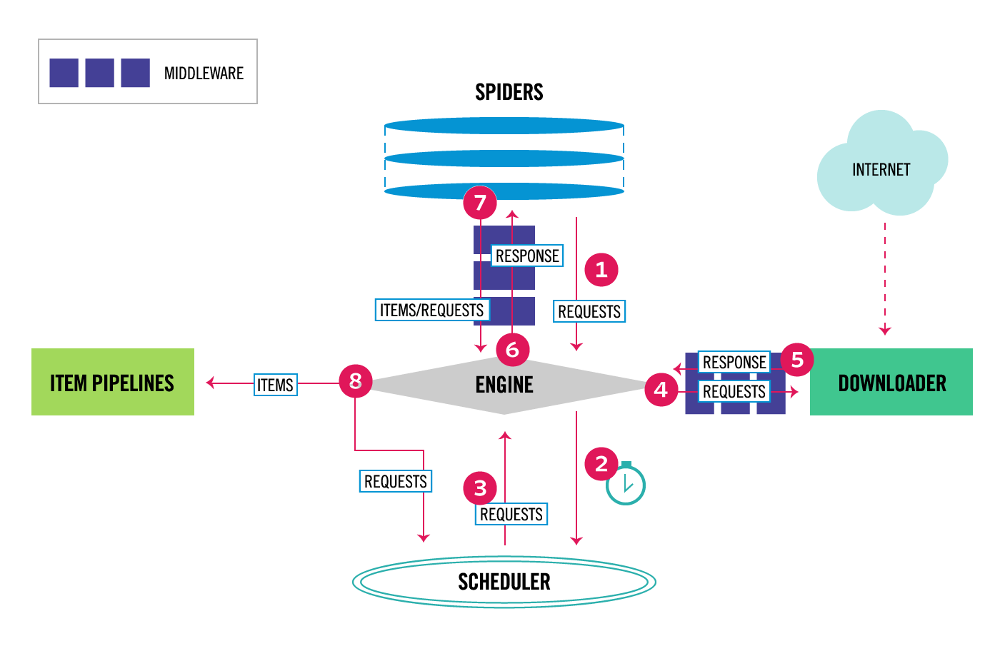

架構概覽¶
This document describes the architecture of Scrapy and how its components interact.
概覽¶
The following diagram shows an overview of the Scrapy architecture with its components and an outline of the data flow that takes place inside the system (shown by the red arrows). A brief description of the components is included below with links for more detailed information about them. The data flow is also described below.
Data flow¶
{kind=link}

The data flow in Scrapy is controlled by the execution engine, and goes like this:
The Engine gets the initial Requests to crawl from the Spider.
The Engine schedules the Requests in the Scheduler and asks for the next Requests to crawl.
The Engine sends the Requests to the Downloader, passing through the Downloader Middlewares (see
process_request()).Once the page finishes downloading the Downloader generates a Response (with that page) and sends it to the Engine, passing through the Downloader Middlewares (see
process_response()).The Engine receives the Response from the Downloader and sends it to the Spider for processing, passing through the Spider Middleware (see
process_spider_input()).The Spider processes the Response and returns scraped items and new Requests (to follow) to the Engine, passing through the Spider Middleware (see
process_spider_output()).The Engine sends processed items to Item Pipelines, then send processed Requests to the Scheduler and asks for possible next Requests to crawl.
The process repeats (from step 1) until there are no more requests from the Scheduler.
Components¶
Scrapy Engine¶
The engine is responsible for controlling the data flow between all components of the system, and triggering events when certain actions occur. See the Data Flow section above for more details.
Scheduler¶
The Scheduler receives requests from the engine and enqueues them for feeding them later (also to the engine) when the engine requests them.
Downloader¶
The Downloader is responsible for fetching web pages and feeding them to the engine which, in turn, feeds them to the spiders.
Spiders¶
Spiders are custom classes written by Scrapy users to parse responses and extract items (aka scraped items) from them or additional requests to follow. For more information see Spiders.
Item Pipeline¶
The Item Pipeline is responsible for processing the items once they have been extracted (or scraped) by the spiders. Typical tasks include cleansing, validation and persistence (like storing the item in a database). For more information see Item Pipeline.
Downloader middlewares¶
Downloader middlewares are specific hooks that sit between the Engine and the Downloader and process requests when they pass from the Engine to the Downloader, and responses that pass from Downloader to the Engine.
Use a Downloader middleware if you need to do one of the following:
process a request just before it is sent to the Downloader (i.e. right before Scrapy sends the request to the website);
change received response before passing it to a spider;
send a new Request instead of passing received response to a spider;
pass response to a spider without fetching a web page;
silently drop some requests.
For more information see Downloader Middleware.
Spider middlewares¶
Spider middlewares are specific hooks that sit between the Engine and the Spiders and are able to process spider input (responses) and output (items and requests).
Use a Spider middleware if you need to
post-process output of spider callbacks - change/add/remove requests or items;
post-process start_requests;
handle spider exceptions;
call errback instead of callback for some of the requests based on response content.
For more information see Spider Middleware.
Event-driven networking¶
Scrapy is written with Twisted, a popular event-driven networking framework for Python. Thus, it’s implemented using a non-blocking (aka asynchronous) code for concurrency.
For more information about asynchronous programming and Twisted see these links: